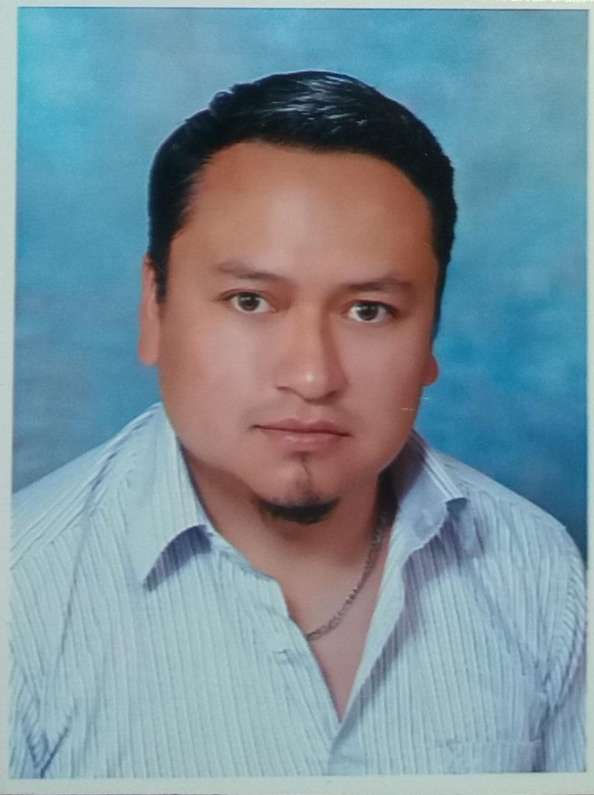

Hoja de Vida Paúl Paguay
Datos Personales
| Nombres Completos: | | Paúl Xavier Paguay Soxo |
| Cédula de Identidad: | | 060272477-5 |
| Lugar/Fecha de Nacimiento: | | Riobamba, 08 junio 1984 |
| Dirección: | | Sangay Casa 15 e Ilaló. Riobamba - Ecuador |
| Teléfono: | | 09849562325 |
| E-mail: | | 032602440 |
Resumen
Ingeniero en Sistemas Informáticos, Magíster en Interconectividad de Redes, docente universitario, instructor de programas de posgrado y cursos
especializados en el área de las TI, experiencia profesional y consultorías en el campo de las TI. Con certificaciones internacionales Microsoft.
Ganador de varios concursos de desarrollo de software a nivel nacional. Aprendiz de SENA
Mensaje motivador:
"No sé si es importante, pero nunca es demasiado tarde para ser quienes queremos ser. No hay límite en el tiempo, puedes empezar cuando quieras.
Puedes cambiar o seguir siendo el mismo. No hay reglas para tal cosa. Podemos aprovechar oportunidades o echar todo a perder. espero que hagas lo mejor.
Espero que veas cosas que te asombren. Espero que sientas cosas que nunca sentiste antes. Espero que conozcas a gente con un punto de vista diferente.
Espero que vivas una vida de la que estes orgullosa. Y si te das cuenta de que no es así……espero que tengas el valor de empezar de cero"
Formación Académica
- Abril del 2013, Magíster en Interconectividad de Redes, Escuela Superior Politécnica de Chimborazo, .
- Abril del 2009, Ingeniero en Sistemas Informáticos, Escuela Superior Politécnica de Chimborazo.
Experiencia
- Docente de las asignaturas ”Proyecto Integrador I”, ”Virtualización, ”Programación III”, ”Aplicaciones Multimediales” de la Universidad Nacional de Chimborazo período Abril 2017 - Julio 2017.
- Responsable del Sistema Integrado de Información del Instituto para el Ecodesarrollo Regional Amazónico ECORAE, período Febrero 2012 – Agosto 2012.
- Técnico Informático de la Escuela Superior Politécnica de Chimborazo del período Diciembre del 2008 – Febrero 2012.
Certificaciones
- Certificación Microsoft Office Specialist (Código: E804-2610) (Fecha: 08/05/2014)
- Certificación Networking Fundamentals - Microsoft Technology Associate (Código: D401-8239) (Fecha: 30/06/2011)
- Certificación DataBase Administration Fundamentals - Microsoft Technology Associate (Código: D389-9151) (Fecha: 25/06/2011)
- Certificación Software Development Fundamentals - Microsoft Technology Associate (Código: D386-7688) (Fecha: 23/06/2011)
- Certificación Windows Server Administration Fundamentals - Microsoft Technology Associate (Código: D386-7689) (Fecha: 21/06/2011)
Capacitación
- Curso del Precongreso ”Experiencias y Resultados en el Uso de las TIC y sus Aportes a la Educación y la Inclusión Educativa”, organizado por el Instituto Superior Tecnológico Bolivariano , Fundación FIDAL y la Organización de las Naciones Unidas para al Educación, Ciencia y la Cultura. duración 40 horas, (04/2017)
- Participación en el ”3er Congreso Internacional de Ciencias Pedagógicas”, organizado por el Instituto Superior Tecnológico Bolivariano , Fundación FIDAL y la Organización de las Naciones Unidas para al Educación, Ciencia y la Cultura. duración 40 horas, (04/2017)
- Curso I Summer School ”Metodologías Activas de Enseñanza Aprendizaje”, organizado por la Universidad Nacional de Chimborazo, duración 40 horas, (09/2016)
- Curso I Summer School ”Herramientas para la Investigación: Edición de Textos Científicos y Técnicos con LaTeX”, organizado por la Universidad Nacional de Chimborazo, duración 60 horas, (09/2016)
- Curso de Virtualización de Servidores, organizado por la Escuela Superior de Redes Red CEDIA, duración 40 horas, (09/2016)
- Curso de Programación de Dispositivos Móviles, organizado por el Servicio Nacional de Aprendizaje SENA, duración 40 horas, (10/2016)
Sitio Web